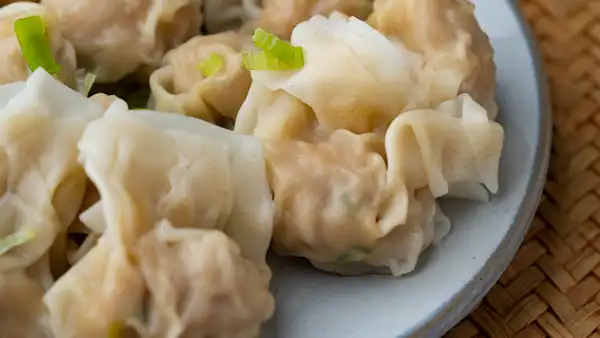

Wontons

Ingredients
- 14 oz wonton wrappers
- 12 oz pork shoulder
- 4 oz shrimp
- 2 piece green onion
- 2 tablespoon cornstarch
- 1 teaspoon salt
- 1 teaspoon sugar
- 0.50 teaspoon white pepper
- 1 tablespoon oyster sauce
- 2 tablespoon water
- 1 teaspoon chicken bouillon
- 1 tablespoon sesame oil
Steps
- Step 1 | We'll chop our green onion (2 piece) into small pieces. Most (or all of it) will go into the filling, but we can optionally save some for garnish later.
- Step 2 | We'll start by cutting our pork shoulder (12 oz) into slices, then into strips, and then into small bits. Then, we'll rinse the pork in water and gently massage it to get some of the myoglobin (redness, more bloody/irony flavor) out. Drain the pork with a colander, and let it continue to drain passively as we move on to the next step.
- Step 3 | Assuming the shrimp you bought was peeled + deveined, we'll chop our shrimp (4 oz) into roughly fingernail-sized bits. Then, we'll add cornstarch (1 tsp) and white pepper (1 dash). The cornstarch acts both as a sort of glue to hold the filling together, and also helps to seal in the moisture and juices inside of the meat. Mix the shrimp around for about 15-20 seconds to make sure they're all evenly coated.
- Step 4 | Before we marinate the pork, we'll want to squeeze as much water out of it as we can. Press the pork firmly against the colander repeatedly. Then, we'll mix cornstarch (2 tbsp), salt (1 tsp), white pepper (0.50 tsp), sugar (1 tsp), oyster sauce (1 tbsp), water (2 tbsp), and chicken bouillon (1 tsp) into a bowl. Mix it with a spoon until it's an even liquid. Add the pork, and mix the bowl thoroughly for about 30-45 seconds. Add sesame oil (1 tbsp), and mix for another 30 seconds.
- Step 5 | Add the shrimp and green onions to the bowl but DON'T MIX them together yet. We'll cover the bowl with plastic wrap and refrigerate the filling for at least 30 minutes to let the meat absorb the marinade. If you start folding immediately, then the wrappers will be too wet. Refrigerating overnight is fine too, with an absolute max of 2 days (or the filling will become too dry).
- Step 6 | Wet a spoon with some water, and proceed to mix the pork, green onions, and shrimp together for about 30-60 seconds until everything is evenly mixed. The wet spoon helps prevent the filling from sticking to it.
- Step 7 | I should preface by saying there are A LOT of different methods of folding wontons out there. In our video, my dad explains two easy methods to try. In general, as long as your filling is tasty and the wrapper isn't breaking or falling apart, then my dad says not to stress too much about the wrapping. Start with the wonton wrappers (14 oz). Add about 1 tsp of filling to the center of the wrapper. For this first method, we'll dab a bit of water on the 4 corners. Then, we'll take the opposite ends and fold the wrapper into a right triangle. Next, we'll fold each of the 45 degree corners into the 90 degree corner. Pinch the top to fully enclose the wonton. If you don't use all of your wrappers, seal the wrappers in a plastic bag, and place them in the freezer.
- Step 8 | Next, we'll bring a pot of water to a boil to start cooking our wontons. Once boiling, add the wontons to the pot. Stir the wontons with chopsticks to prevent them from sticking to the pot (which causes breakage). After placing our wontons in, our stove is set to high heat until the pot returns to a boil. Once it's at a boil, set the stove to medium heat. In total, we're boiling our wontons for about 4-5 minutes.